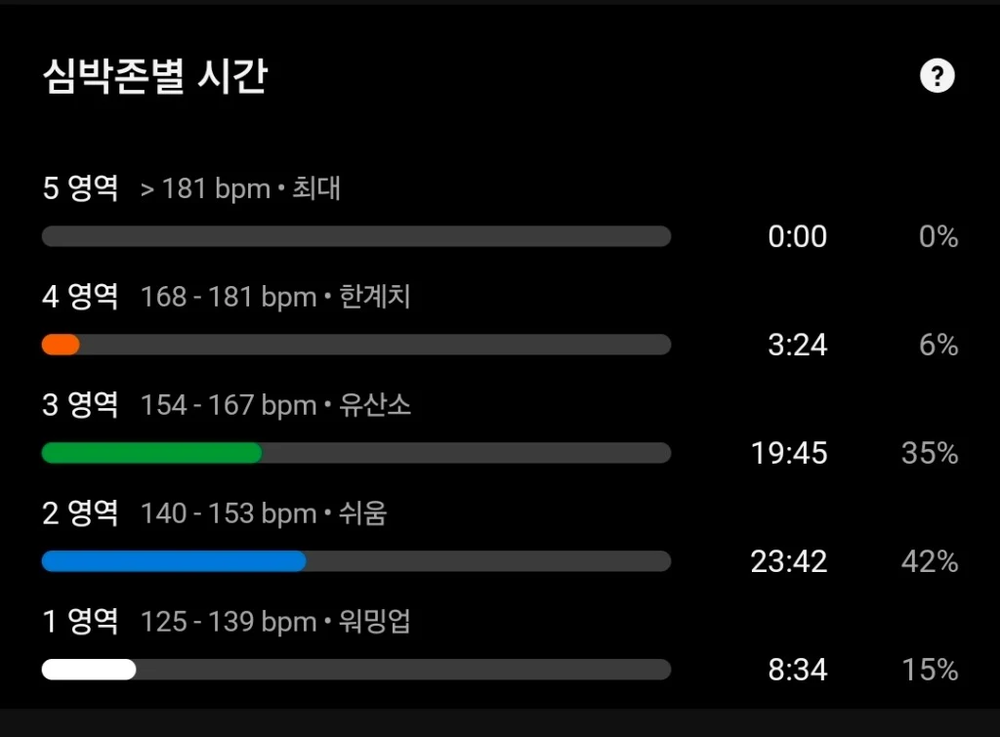

심박수 Zone 2 훈련의 기적: 천천히 뛰어야 빨라지는 세포 생물학적 이유
- 숨이 차오르는 고강도 달리기는 무산소 대사를 자극해 젖산만 급격히 쌓고 유산소 기저 체력을 키우지 못합니다.
- Zone 2(최대심박의 60~70%) 훈련은 지방을 주 연료로 쓰는 미토콘드리아의 크기와 개수를 폭발적으로 증식시킵니다.
- 대화가 가능한 편안한 페이스로 주간 마일리지의 80%를 채우면, 3개월 뒤 같은 심박수에서 페이스가 30초 이상 당겨집니다.
1. "달릴 때마다 숨이 턱 끝까지 차야 운동이 된다?" 러너들의 치명적 오해
많은 러너들이 러닝을 할 때 '숨이 차서 헉헉거리고 온몸이 땀으로 범벅이 되어야 제대로 달렸다'는 성취감을 느낍니다.
하지만 역설적이게도 케냐와 에티오피아의 세계 최고 엘리트 마라토너들의 훈련 일지를 뜯어보면, 전체 달리는 시간의 80% 이상을 옆 사람과 편안하게 대화할 수 있는 느린 조깅 페이스(Zone 2)로 달립니다.
매일 심박수를 Zone 4~5로 몰아붙이며 숨을 헐떡이는 러너는 심근 피로와 만성 코르티솔 분비로 몇 달 만에 성장 정체기(Platuea)를 맞이하고 부상으로 달리기를 멈추게 됩니다.
2. 미토콘드리아의 기적: 세포 레벨에서 지방을 태우는 엔진 개조
우리 근육 세포 안에는 산소와 지방을 결합해 무한한 유산소 에너지를 만들어내는 세포 내 발전소인 미토콘드리아(Mitochondria)가 존재합니다.
스포츠 생리학자 이니고 산 밀란(Iñigo San-Millán) 박사의 연구에 따르면, 심박수가 젖산 축적 이전 단계인 Zone 2 영역에 머물 때 미토콘드리아의 기능과 개수를 늘리는 신호 단백질(PGC-1α)이 가장 활발하게 분비됩니다.
반면 페이스를 조금만 올려 Zone 3~4로 넘어가면 탄수화물 분해로 젖산(Lactate)이 축적되면서 지방 분해 효소의 작용이 즉각 차단되고 맙니다. 즉, 천천히 달려야만 지방을 연료로 태우는 거대한 유산소 엔진이 만들어집니다.
3. 내 몸에 딱 맞는 Zone 2 심박수 찾는 법
스마트워치가 계산해주는 단순 220-나이 공식은 최대 20bpm 이상의 오차가 발생하므로 신뢰하기 어렵습니다.
실전에서 가장 정확하고 직관적인 기준은 '토크 테스트(Talk Test, 대화 테스트)'입니다. 뛰면서 코로만 숨을 쉴 수 있거나, '애국가 1절을 끊기지 않고 노래하듯 말할 수 있는 수준'이 정확히 Zone 2 영역입니다.
심박수 기준으로는 카보넨 공식(안정시 심박수 반영)의 심박 예비력(HRR) 60~70% 구간에 해당하며, 보통 안정 심박 60bpm, 35세 성인 기준 약 130~142bpm 내외에 형성됩니다.
4. 실전 80:20 분할법: 진짜 고수가 되는 훈련 비율
세계적인 스포츠 과학자 스티븐 세일러(Stephen Seiler) 교수가 밝혀낸 세계 정상급 지구력 선수들의 황금 비율은 80:20의 법칙입니다.
일주일 훈련 빈도 중 80%는 Zone 2 편안한 조깅으로 채워 유산소 모세혈관망과 미토콘드리아를 촘촘하게 확장합니다.
그리고 나머지 20%(주 1회)만 인터벌이나 템포런 같은 고강도 스피드 훈련을 배치합니다. 이 80:20 원칙을 12주만 지키면, 평소 140bpm에서 6분 페이스로 뛰던 사람이 같은 140bpm에서 5분 20초 페이스로 편안하게 질주하는 마법 같은 심장 연비의 성장을 경험하게 됩니다.
아래 데이터는 필자가 46분간 진행한 실제 야외 러닝의 가민 커넥트 심박존별 시간 분포입니다. 숨이 차오르는 고강도 Zone 4는 전체의 6%(3분 24초)에 불과하며, Zone 2(42%, 23분 42초)와 Zone 3(35%, 19분 45초)에 훈련의 77% 이상을 집중했습니다. 이렇게 유산소 기저 영역에 시간을 쏟아부어야만 심장 좌심실 용적이 확장되고 미토콘드리아가 촘촘해져, 마라톤 후반 30km 이후에도 퍼지지 않는 강철 체력이 완성됩니다.

내 실력에 딱 맞는 4대 훈련 페이스를 알고 싶다면?
RunAnalyz 분석 엔진이 내 최근 기록을 바탕으로 부상 없는 조깅 속도부터 템포런, 인터벌 페이스를 1초 만에 무료 처방해 드립니다.
⚡ 내 맞춤 Zone 2 심박수 & 조깅 페이스 진단하기